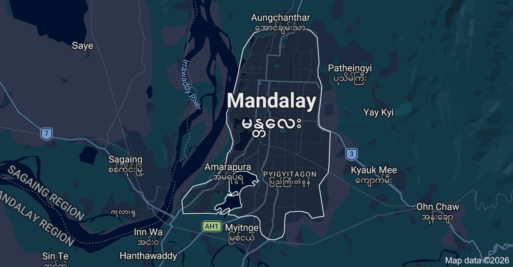

Zone 1: Upper Myanmar
Mandalay Interactive Heat & Cooling Map
An overview of urban heat islands across the Mandalay division. Use the data panels below to monitor dangerous thermal zones and track localized public cooling stations during severe dry-zone heat alerts.
Mandalay Critical Zones
Chanayethazan, Maha Aung Myae, and Pyigyidagun townships are currently reporting peak dry thermal density levels.
Mandalay Cooling Hubs
Shaded religious monastery compounds, ancient brick structures, and indoor public facilities are designated safe retreats.

Temp: 41°C
- • Peak alert: Keep indoor bamboo blinds down between 11 AM - 4 PM.
- • Hydration: Drink electrolyte-rich liquids hourly to fight dry heat exhaustion.
- • Reduction: Apply wet towels to pressure points to lower core temperatures.